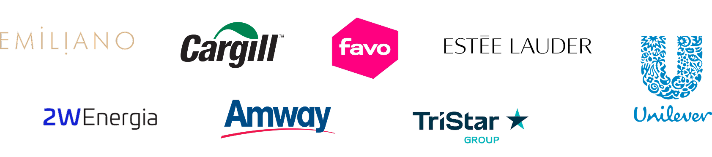
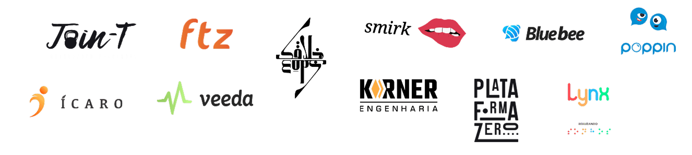

Right Problem
Start with the real problem.
Talk to the people you’re designing for. Quantify what’s not working. Every decision after this one depends on this one being right.
I’m Khevin Mituti — fifteen years of product, brand and experience work for global companies and the startups out to replace them. The bar: things that work, in the world, for the people they were drawn for.
Talk to the people you’re designing for. Quantify what’s not working. Every decision after this one depends on this one being right.
Will customers use it? Can we build it? Does it work for the business? Value, feasibility, and viability — three checks, all required before anything ships.
Mitigate usability risk through testing and iteration. Measure and monitor the in-market experience. Continuously improve — design doesn’t end at launch.
Throughout a fifteen-year career, I’ve had the chance to lead over a hundred projects — across UX, product management, interaction, brand, DesignOps, front-end development and communications.
User-centered products that meet real user needs and business objectives — research, iterative design, strategic decisions, team collaboration.
Product–market fit. Identity and positioning that match what the market actually wants. Competitive analysis, market research, brand development.
Creative direction for visually compelling communication systems. Visual design, systemic design, storytelling.
ProductOps and process. Streamlining design and product operations. Process optimization, team coordination, tool integration, workflow automation.
A partial list. Some I led teams inside, some I consulted from the outside, some I designed end to end.


Some of my work is protected. Some of it is old. Some of it is interesting enough that I want to share it with you in detail.
Public-facing pieces that didn’t warrant a full case study but earned a paragraph.
Art direction, credit-card design, web collateral and a UX review for an open-banking fintech.
Art direction, pre-project work and design oversight for a hotel-stay app with a tailored experience.
Website and physical collateral for a teen-focused financial-account startup. Voice and visuals, end to end.
Art direction, brand identity, positioning, collateral and product design for a multi-channel application.
The further into a project we get, the more the early steps pay off — and the cheaper the late ones become.
Before anything is sketched, we go deep on the user’s actual job — interviews, behavior, pain points, business analysis. The point is to be sure we’re solving the right thing.
Stakeholders, engineers, project leads — same room. Tech feasibility, budget, timeline, the real edges of the box. Innovative and doable.
Concepts in the open, critiqued early, refined fast. The team is the first review. We commit to the strongest options before they leave the studio.
Prototypes in the hands of users. Usability tests, interviews, surveys. We measure, learn, adjust — close the loop until the work meets what it promised.
If you’ve got a real problem, real users and a real team that wants to ship — let’s talk. I take a small number of projects each year and I’d rather do good work than busy work.